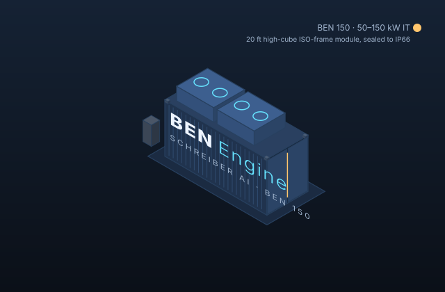

Business Edge Node · modular data center
AI infrastructure that arrives finished.
A data center in an off-the-shelf container or outdoor cabinet, sized from one rack for a small business to a 500 kW liquid-cooled AI pod. Designed, built, commissioned and watched by Schreiber AI. Buy the whole box, just the power or cooling module, or put your own brand on it.
- Four tiers, one engineering model: every drawing, part and alarm threshold comes from the same configuration.
- Risks are shown before prices. Always.
- Open, local-first controls. Your data stays in your box.

One family, four sizes
Modules can be bought separately: Power (service entrance, ATS, UPS, distribution), Cooling (DX, rear-door, or direct liquid), Compute (racks and reference GPU/CPU nodes), Controls (BEN Controller, BEN Pods on the BEN Mesh, dashboard, twin, BEN Care): BEN Controls Lite (Revolution Pi, BEN 5 and BEN 30) or BEN Controls Pro (PLCnext PLC in a UL 508A panel + industrial edge computer, BEN 150/40 and BEN 30 on request). The container, envelope and fire/safety come with any module.
Mission profile picker
Start with what the box is for. The profile sets the environmental class, redundancy, climate package, compliance pack and the risk list you will see next.
The risks, before the price
Every modular data center carries these risks. We list them first so you can see exactly which ones BEN Engine covers by design, which we monitor, and which stay with you. Filtered for the profile you picked.
Full register with likelihood, consequence and mitigation: docs/RISK_REGISTER.md.
Configure your BEN
Sizing comes from the same model that generates the drawings and the bill of materials (software/ben_engine/config.py). Prices are indicative and show how much of the total is vendor-confirmed, list price, or our estimate.
See it run before it exists
Every BEN ships with its digital twin. The dashboard below is the same software that runs in the box, in simulation mode: live data, 3-D walkthrough, automated test sweeps, fault injection, calibration, CFD and CSV export, with no hardware attached.


Launch the demo dashboard Runs locally: bash scripts/run_dashboard.sh then open http://localhost:8080
How we build it
- Profile and site. You pick the mission; we survey the site and you sign the site requirements.
- Engineering release. The configuration is frozen. Drawings, bill of materials, compliance pack and twin are generated from it.
- Factory build. Off-the-shelf container or cabinet, fitted out from Simplified Technical English instructions with hold points for the licensed trades.
- Factory acceptance test. The commissioning script runs the unit through load steps, failover and ride-through before it ships.
- Site acceptance. Same script, on your pad, with you watching. You get the signed report and the data.
- Operate. Schreiber AI watches it, or you do, or your partner does under their brand.
Full process flow with owners, hold points and records: docs/PROCESS_FLOW.md.
Compliance is the product
Electrical
NEC Art. 645 and 110.26 working space, UL 891/67 distribution, UL 1778 UPS, UL 9540 battery cabinets, NFPA 70E arc-flash labels, UL 508A BEN Controller panel (BEN Controls Pro: Phoenix Contact PLCnext PLC, industrial edge computer with TPM); BEN Controls Lite uses listed DIN-rail components (Revolution Pi).
Fire and life safety
NFPA 75/76 practices, NFPA 72 detection, NFPA 2001 clean agent, hardwired EPO and door interlocks, never on the controls network or the BEN Mesh; every BEN Pod carries a hardware root of trust (Secure Vault High) and attests before it joins.
Thermal and refrigerant
ASHRAE TC 9.9 classes A1–A4, ASHRAE 15/34 and UL 60335-2-40 charge limits for A2L refrigerants, EPA 608 handling.
Structure and transport
ISO 668/1496 container, CSC re-certification after modification, ASCE 7 wind/seismic/snow by climate package.
Cyber
IEC 62443 zones, local-first data, signed firmware, no cloud dependency, SOC 2 roadmap for the managed service.
Profile packs
HIPAA for healthcare, NIST 800-171/CMMC for public sector, TIA-942 rated-level mapping for every tier.
Matrix with verification methods and who certifies: docs/COMPLIANCE.md.
Talk to Ben
Schreiber AI builds BEN Engine for small and medium businesses that want AI on their own terms. Send the configuration you built above and we will come back with a site checklist and a real quote.
Ben@SchreiberAI.com